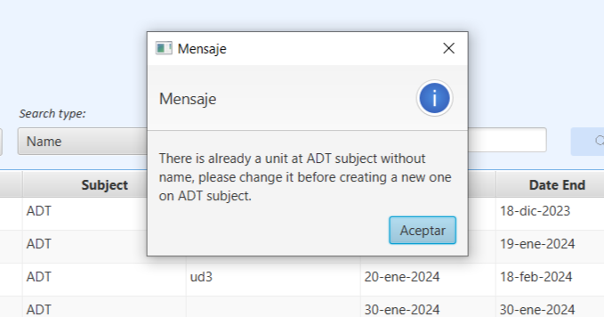
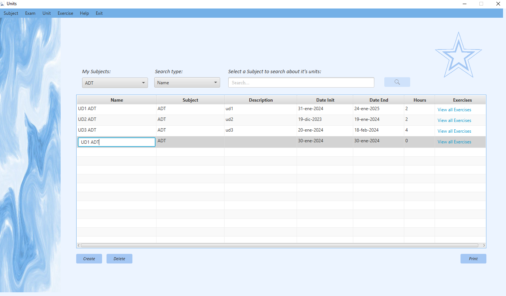
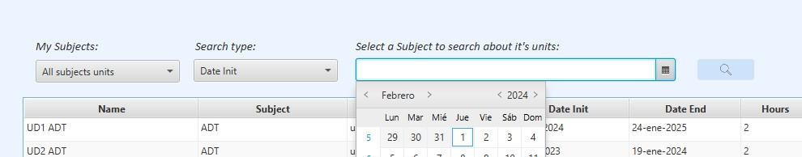

Units Manager: Help
Descripción general:
Esta ventana te permite ver las "Units" de una "Subject".
La aplicación permite dos tipos de usuario y tendran permisos diferentes.
Los "Teachers" por un lado, tendran permisos especiales para poder crear, modificar, buscar y eliminar las units de las subjects en las que este enseñando.
Los "Students" por otro lado, tendran unicamente permisos para poder buscar las units de de las subjects en las que este previamente matriculado.
Así mismo, ambos usuarios podrán generar un informe> que contiene un listado de los unidades con sus correspondientes datos.
Y también podran mediante el link que hay en la tabla por cada fila, "View all Exercises" ir a la ventana de manejo de exercises y verlos.
Operaciones para "Teacher":
Crear Units
Para crear una Unit, tendras que hacer click en el botón de "Create" y este generara una Unit con valores por defecto en la tabla.
Vamos a hacer un ejemplo en la subject "ADT" y le damos al botón de "Create"":

Si todo sale bien: saldra un mensajito de que se ha añadido una nueva unit

Despues de aceptar el mensaje la tabla se cargará con el nuevo valor.

Si algo falla: Puede ser porque en una misma Subject no pueden haber dos Unit con el mismo nombre, por lo que antes de crear la unit con valores por defecto te conprobara que no existe una sin nombre en la misma subjects donde se creé.
Si sucede este problema aparecera una alerta avisando que añadas nombre a la unit que no tiene y despues de añadirselo te dejara crear otra en la misma subject con valores por defecto.
Modificar Units:
Al ser una tabla editable puedes editar directamente la información que quieras clickando dos veces en el campo que quieras editar.
--> Modificar Name:
Continuando con el ejemplo anterior, vamos a cambiarle los valores por defecto a la unit.
Primero clickaremos dos veces en la celda de "Name" para ponerla en modo edición.

Le cambiaremos el nombre a "Unit to update" y le daremos al enter para aceptar el valor.

--> Posibles errores al modificar Name:
Un error podría ser que metas el nombre de una unit que ya existe en la misma subject. Por ejemplo, vamos a poner "UD1 ADT" otra vez.
Y al darle al enter nos mostrara un mensjae avisando de que se repiten nombres en la subject y el valor no se guardara.

Otro problema podria ser: que el nombre que as escrito se ha pasado del limite de caracteres, ya que la celda solo permite 100 asi que serias avisado de que te has pasado del limite con este otro mensaje.
--> Modificar Subject
Al clickar dos veces en la tabla, veremos un combobox con los valores de las subjects en las que enseña el profesor.

Para el ejemplo pondremos "PGR".

Al aceptar el valor desaparecera la unit porque estamos listando las units the "ADT".
Pero si abrimos "PGR" la volveremos a ver.
--> Modificar Description
Primero clickaremos dos veces en la celda de "Description" para ponerla en modo edición.
Escribiremos un valor de ejemplo.
Si el valor es correcto se actualiza la tabla con la nueva información.
--> Posibles errores al modificar Description:
El error podria ser que la description que as escrito se ha pasado del limite de caracteres, ya que la celda solo permite 100 asi que serias avisado de que te has pasado del limite con este otro mensaje.
--> Modificar Date Init
Primero clickaremos dos veces en la celda de "Date Init" para ponerla en modo edición y aparecera un datepicker para elegir fechas.
Si la fecha es correcta se guardara el valor y se actualizara la tabla
--> Modificar Date End
El campo de dateEnd es igual que el de Date Init pero el valor tiene que ser posterior al date init
Asi que vamos a meter una fecha posterior

--> Modificar Hours
Primero clickaremos dos veces en la celda de "Hours" para ponerla en modo edición.
Tendremos que meter un número entero para que sea un valor valido.
--> Posibles errores al modificar Hours:
Meter letras o otro caracter diferente de un número dara error y no guardará el valor
Borrar Units:
Se pueden borrar "Units" con el boton de "Delete".
Se necesitara tener algo seleccionado en la tabla, si no el boton no se activara.

Cuando se realice la accion saldra una pregunta esperando confirmación para borrar la Unit seleccionada.
Si le das a la x o a cancelar desaparecera y entonces no se borrará nada.
Si le das a acceptar la unit se borrará y la tabla se actualizara.

Menú de contexto:
Al hacer click derecho sobre la tabla aparecera un menú de contexto con las opciones de "Create", "Delete" y "Print""
Estos permitiran hacer lo mismo que sus respectivos botones y en el caso del delete tendras que seleccionar una fila.
Operaciones para ambos users
Busqueda de Units
La ventana tiene 4 tipos de busqueda y necesitas seleccionar una subject en concreto para que te permita buscar.
Para buscar por nombre y por horas saldra un campo de texto con limite de caracteres a 300.
Para buscar por Date Init y por Date End saldra un datepiquer como en la tabla antes.
La busqueda cargara la tabla teniendo en cuenta el tipo de busqueda y la subject en la que buscas.
Ejemplo, vamos a buscar por hours en ADT un "2":
Al buscar el "2" se nos cargan las dos unidades que hemos visto que tenian "2" en las horas.
Si ahora lo cambiaramos al 4, se nos cargaría solo la restante.
Imprimir listado de UnitsPulsando el botón "Print" se abrirá una ventana donde puede ver un documento que contiene un listado de los "Units" que existen en la aplicación.
La ultima opción que pueden hacer ambos usuarios es ir a la ventana de exercise desde el link de la tabla.
Disfruta de la gestión.